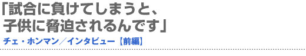
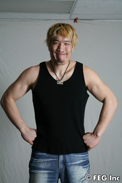
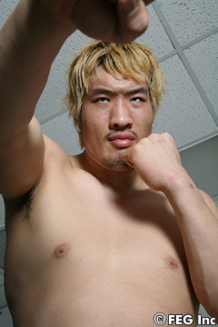
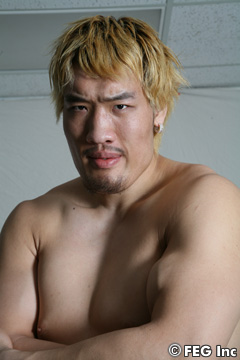

K-1ハワイ大会でマイク・マローンから豪快なKO勝ちを収めたチェ・ホンマンが、今度は世紀のビッグイベント『SoftBank presents Dynamite!! USA in association with ProElite』（6月2日＝現地時間、アメリカ／ロサンゼルス・メモリアル・コロシアム）で、ブロック・レスナーと総合格闘技ルールで闘うことが決まっている。そんな超多忙なホンマンを直撃。前編と後編に分けて、お送りする。
周りはみんな反対していた
 ――昨年末は『Dynamite!!』で総合格闘技の試合（ボビー・オロゴン戦＝KO勝ち）を初体験しましたが、どんな印象がありますか？
ホンマン 思っていたよりも楽しかったですね。正直に言うと、K-1より楽に試合運びができたので、思っていたよりも良かったです。
――そもそもシルム（韓国相撲）から格闘技に転向した理由は。
ホンマン 勝負だけではなく、あの舞台、リングに立てることを光栄に感じています。そんな思いから、闘ってみたいという気持ちにつながったのだと思います。
――転向の際、周りからの反対はなかったのですか？
ホンマン 両親も友人も、私のことを知る人は、みんな反対していました。とても心配していたのだと思います。今でも辛い思い出です……。
――シルムから転向した頃の話ですが、ご家族はどんなアドバイスがあったのでしょうか。
ホンマン それが、もう大変なんですよ（笑）。以前、両親は格闘技について何も知りませんでした。でも格闘技を始めてからは、いつも見てくれるのですが、もう専門家気取りですね。試合があるたびに録画して、いつもアドバイスしてくれますよ。
――どんなアドバイスですか。
ホンマン 今日は顔色が良くないとか、些細な姿まで見てくれています。細かく指摘してくれるので、元気が出ますけどね。
――ご家族は、どんな存在ですか。
ホンマン 試合会場に両親が来ると、なぜか良い試合が出来ないんですよね。逆に家で応援してくれる方が、プレッシャーにならないでのいいのかもしれません（笑）。
ケンカはやられる方でした
 ――ちなみに小さい頃は、どんな子供でしたか？
ホンマン 今と正反対でしたね。幼い頃は体が弱かったし、ケンカではやられる方でしたから。
――そんなに体が大きいのに！
ホンマン 目立つからでしょうね。だから、小さいときは両親を恨んだこともありましたよ。今はみんな親切にしてくれるし、人と付き合うことが好きなので、いいですけど。
――韓国で格闘技がブームになっていますが。
ホンマン 格闘技の選手の立場からすると、とてもいい傾向だと思います。もっと活性化することを願っていますし、頑張りますよ（笑）。
――レスナー戦は、ご家族を招待しますか？
ホンマン いや、遠すぎますね。私だって遠いと思っているし、逆に来てくれない方が、いい試合ができるかもしれない。できれば来ないでほしいなぁ（苦笑）。
インターネットは一日2時間
 ――格闘技は危険なスポーツだと思いますが、後悔はしていませんか。
ホンマン いいえ。むしろ、得たものは多いですよ。最初は皆に心配されたりして、不安を感じながら格闘技を始めたものです。でも今は、格闘技からたくさんのことを学んでいます。
――練習以外では、どんなことをしているのでしょうか？
ホンマン 趣味は、かなりの時間、インターネットをしていますよ。他の人の倍はしていると思います。ゲームはしませんが、インターネットで、韓国の出来事はチェックしていますし、中学生や大学生のファンとたくさん対話していますね。毎日、2時間はしています。
――どんな話題が出てくるのでしょうか。
ホンマン 小さな子供と話していると、想像もつかないような話が出てくるんです。試合に勝ったら、嬉しい言葉もかけてくれますが、負けたら脅迫されることもあります。だから負けられないんですよ（笑）。
――子供たちに反論をするのですか。
ホンマン そんなときは、面白がったり、腹が立ったりといろいろですね。私も勝負事になると、ちょっと感情的になりますから（苦笑）。■
※以下、＜後編＞へ続く…。 |